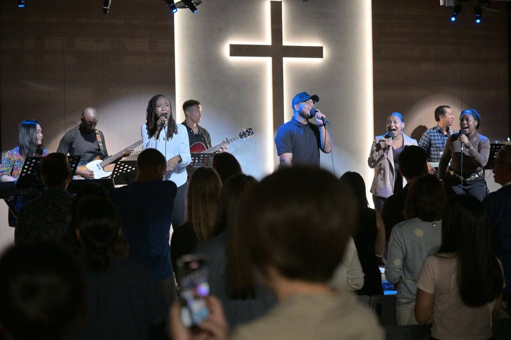

What's on最新消息
This week at TIC, stories from our church family and messages to watch.
本週活動、教會家人的見證，以及可以收看的講道。
This Sunday本主日
SEP 27
Sunday service · 10:30 AM主日崇拜 · 上午10:30
A message on generosity from 2 Corinthians 9:6–15. In person in Dazhi and live online at 11:00 AM.
講道主題：慷慨（哥林多後書9:6–15）。大直實體聚會，上午11:00線上直播。
Women's Bible Study姊妹查經 · 10:00–11:30 AM
Young Adults Bible Study青年查經 · 7:30–9:30 PM
Men's Group弟兄聚會 · one Saturday一個週六
Worship Circle敬拜圈
Stories見證
My life changed at TIC我在台北國際教會的改變
Surrendered
Iquo Phillip shares about the loss of her son and how TIC became her family's home in Taiwan.
Iquo Phillip 分享失去兒子的經歷，以及台北國際教會如何成為她家人在台灣的家。
Make Room
Our 2025 InterGen & Young Adults retreat at Ting Tao Camp in Yilan.
2025年跨世代與青年退修會，在宜蘭聽濤營舉行。
Sent to the nations差派到萬國
Mission trips to Madagascar and the Philippines, and helping a young woman come home from Cambodia.
前往馬達加斯加與菲律賓的宣教之旅，並幫助一位年輕女子從柬埔寨返家。
Healed after eight years of pain from a sports injury.
運動傷害疼痛八年後得醫治。
Learned to depend completely on God through paralysis.
在癱瘓中學會完全依靠神。
Baptized in 2019 during cancer treatment.
2019年在癌症治療期間受洗。
Saw God heal someone she prayed for.
親眼看見神醫治她所代禱的人。